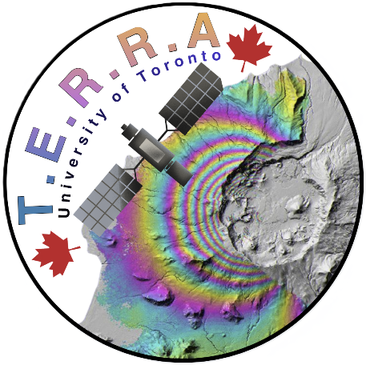

About the project
Curiosity, grounded in evidence.
A research project exploring how satellite observations and machine learning can help us understand a changing Earth.

The name
T.E.R.R.A
The full meaning of the project name will be added once confirmed by its creators.
This edition brings real satellite maps, an experimental four-branch deformation model and accessible explanations into one place.
The current mountain-and-orbit mark is a provisional project symbol, ready to be replaced with the approved logo.
About the creators
↗
Meet the creators
Introductions are being prepared. The creators’ names, backgrounds and project stories will appear here once supplied.
Research with a clear boundary
A place to explore, not an emergency alert system.
T.E.R.R.A presents saved observations and experimental forecasts. It does not issue official warnings, confirm that a location is safe or recommend evacuation based on model output. Current advice belongs to local monitoring agencies and emergency authorities.
The project keeps its deformation model separate from experimental seismic forecasting. This makes it possible to test whether extra information adds value without turning a research hypothesis into an operational claim.
Read the methods and limitations ↗